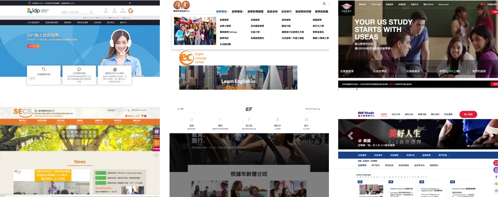
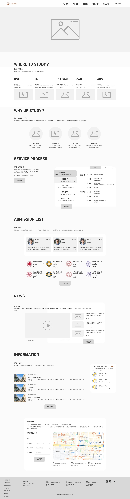
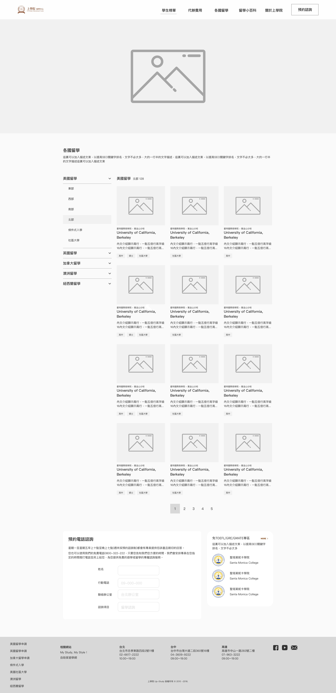
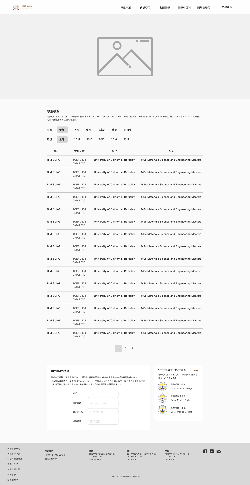
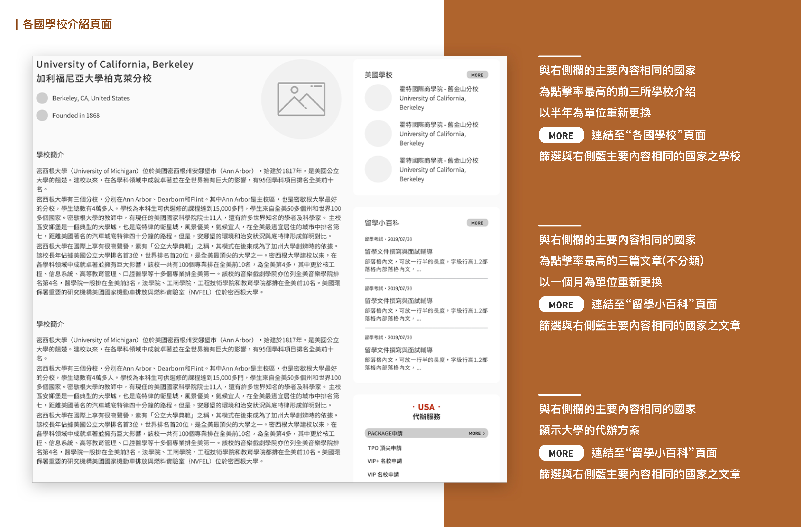
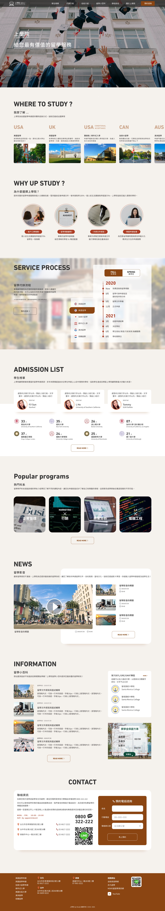
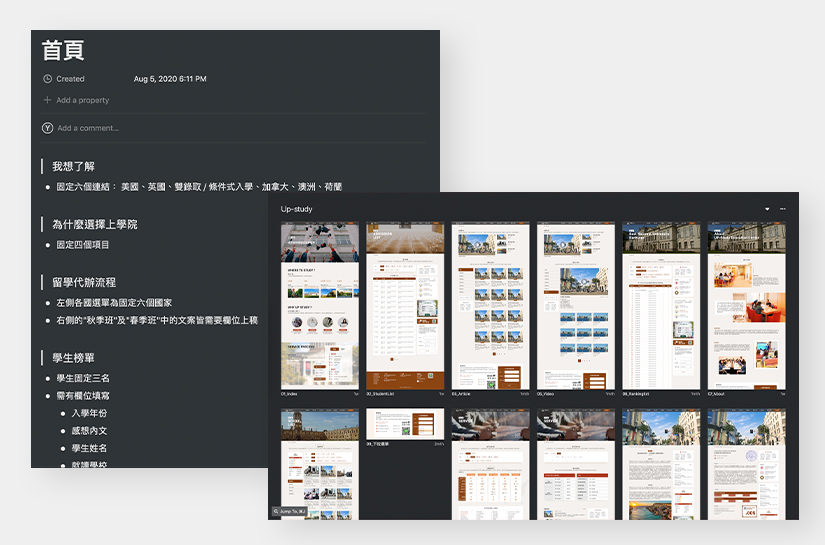

Web & Mobile
2020
Product Manager / UI.UX Designer
上學院官方網站架構規劃、設計
上學院是一個留學申請機構，服務對象為申請出國留學之顧客。但網站的內容沒有經營導致資訊過時，且視覺設計上也維持老舊的風格，在每一個頻道的頁面中沒有設置動線導流，沒有順暢的操作體驗。
為了在眾多留學代辦品牌中脫穎而出，上學院希望能讓顧客在網站中得到留學申請的基本了解並獲取更多相關內容，而進行網站重新架構規劃、設計。
為了在眾多留學代辦品牌中脫穎而出，上學院希望能讓顧客在網站中得到留學申請的基本了解並獲取更多相關內容，而進行網站重新架構規劃、設計。
Highlight
- 提高網站的獨特性
透過同業競品分析與使用者、顧客訪談，規劃出符合使用者需求的網站架構內容。 - 重新建構網站體驗
利用Jakob Nielsen的設計十大原則觀察網站上對使用者的操作流程不友善的設計並加以優化。 - 延長使用者在網站上停留的時間
重新設計頁面間的動線導流，以提供使用者相關內容，減少因為內容不足或不相關而跳出頁面。 - 提高使用者諮詢的意願
於適當頁面內容引導、提醒使用者有線上或是現下的諮詢服務，進而提高訂單成交機率。 - 專案管理
與前、後端工程師溝通，製作Wireframe與前、後台Spec文件。
原網站評估
此研究方法採用Jakob Nielsen的設計十大原則觀察網站上對使用者的操作流程不友善的設計，另有營運考量的建議(文中灰底)。
策略分析・提高網站的獨特性
從直接競品中可以看出，許多代辦機構將遊學與留學兩種服務建立在同個網站上，然而留學相比遊學，需要更多思考與準備，因此為不同方向之客群，另外，多數學生透過不同管道蒐集資訊，例如：PTT、Dcard、親友的經驗談抑或是代辦中心諮詢，在現有的代辦機構的市場中，並沒有滿足學生的這些需求，因此我們決定用經營知識庫的方式，將各種留學的疑難雜症放在官方網站上。

資訊架構重新整合・重新建構網站體驗
在規劃初期時使用心智圖繪製網站架構，同時在執行“文章頁面”規劃時邀請了自助家的同仁一起參與，在此使用開放式的卡片分類法進行，最後繪製出wireframe。



延長使用者在網站上停留的時間
部分網頁設計採用左右欄的形式有助於提供大量的資訊，但不會讓使用者陷入無法找到重點內容的窘境。較窄的欄位會依據頁面的主要內容提供相關的資訊，有助使用者從不同的入口瀏覽網站上不同的頁面，藉此增加頁面轉換率，同時也有助於提升SEO排名。

UI設計成果

專案管理
此次與其他外包前、後端工程師協作，利用Zeplin溝通前端需求並產出Spec文件有利於後端工程師製作後台系統，同時也幫助顧客日後執行網站邏輯、設計上的修改有所依據。

尚未公開